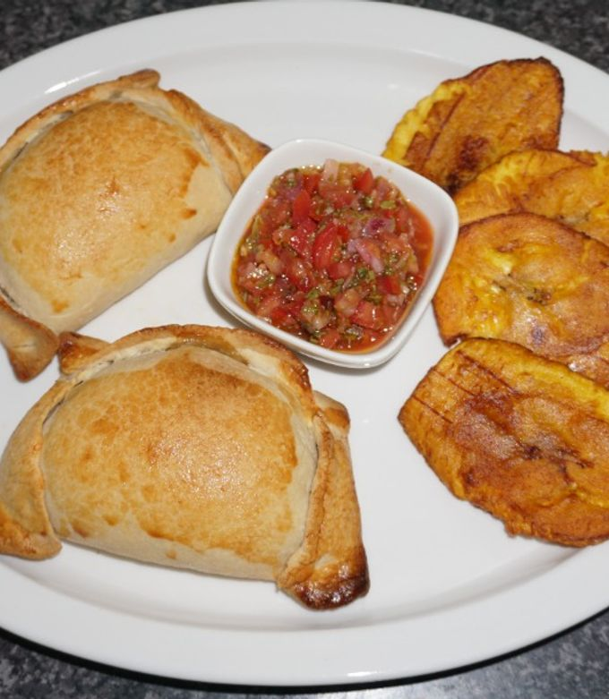
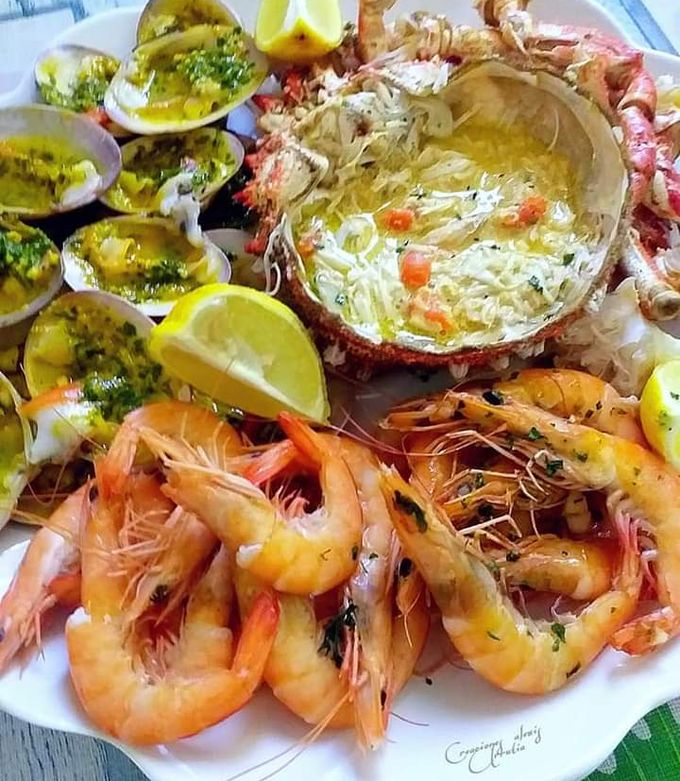
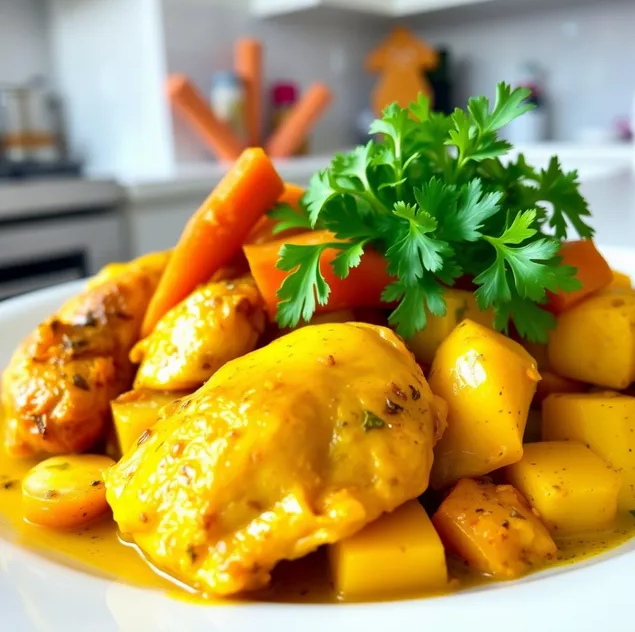
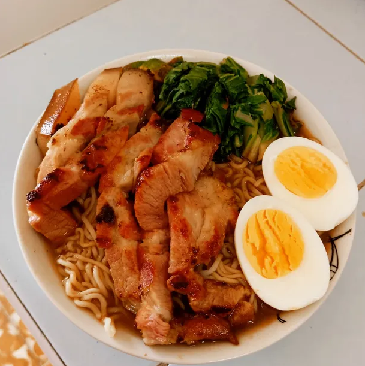

Falsa mousse centollo en cucharitas
huevos cocidos · palitos de cangrejo · mejillones al natural escurridos · berberechos al natural escurridos · mayonesa · nata para cocinar · sal · cucharitas comestibles
Autor: Berta Álvarez

Crema de centolla con crujiente de pan
Centollas cocidas · Cebollas medianas · Leche entera con calcio · Maicena · Sal · Pimienta negra · Nuez moscada · Aceite de oliva virgen extra · Pan rallado (previamente tostado con ajo)
⏱️ 50 minutos (+ tiempo de extraer la carne) · 👥 8–10 comensales
Autor: Arianne

Palta rellena con salpicón de centolla
Carne de centolla cocida · Cebolla morada · Pimiento morrón · Apio · Cilantro · Mayonesa · Mostaza a la piedra
⏱️ 30 minutos · 👥 2 raciones
Autor: Jon Michelena

Empanadas de chupe de centolla con camarones
Carne de centolla cocida · Camarones descascarados y desvenados · Mantequilla sin sal · Cebolla en cuadritos
⏱️ 2 horas · 👥 14–15 raciones
Autor: Jon Michelena

Mariscada de crustáceos y centolla rellena
Centolla viva (1.5 kg) · Conchas finas vivas · Gambas frescas grandes · Limones · Ajos gruesos · Perejil fresco
👥 4 personas
Autor: Alexis Urrutia

Spaghetti con carne de centolla
Centollas hervidas · Spaghetti · Cebolla y ajo en daditos · Concentrado de tomate · Brandy · Estragón · Tomates cherry · Aceite de oliva
⏱️ 40 minutos (+ tiempo centolla) · 👥 4 comensales
Autor: Arianne

Mousse de salmón en cucharitas
1 kg lomo de salmón fresco y sin piel· 6 langostinos crudos medianos · 6 claras de huevo · 2 yemas · 1 tarrina 200 gr de nata líquida · 1 cda mantequilla · pimienta de cayena
⏱️ 40 minutos · 👥 10 raciones
Autor: maria_

Mousse de aguacate y chocolate
1/2 aguacate maduro· 2 cucharadas cacao en polvo o menos, al gusto · 1 sobre Stevia o el endulzante que prefieras · 1 pizca sal, opcional
👥 1 ración
Autor: LuzMa SG

Pollo con papa y zanahoria
1 papa grande · 2 zanahoria pequeña · 4 muslos de pollo o contramuslo · 4 dientes ajo · 4 dientes ajo · 1 pizca Cúrcuma · 1 pizca pimienta · Pizca Cebolla en polvo · Pizca Perejil · Pizca paprika · 1 cucharada limón o vinagre o naranja agria
👥 4 personas
Autor: Dayana Ramos

Ramen de lomo de cerdo ahumado
2 sopas instantáneas 2 cucharadas Aceite · 1 huevo · 1 lomo cerdo ahumado (con hueso) · 1/2 cebolla blanca · 5 dientes ajo · Acelgas · Sal · Pimienta · Salsa china · Salsa de ostras (opcional)
👥 1 ración
Autor: Eduardo Machado U